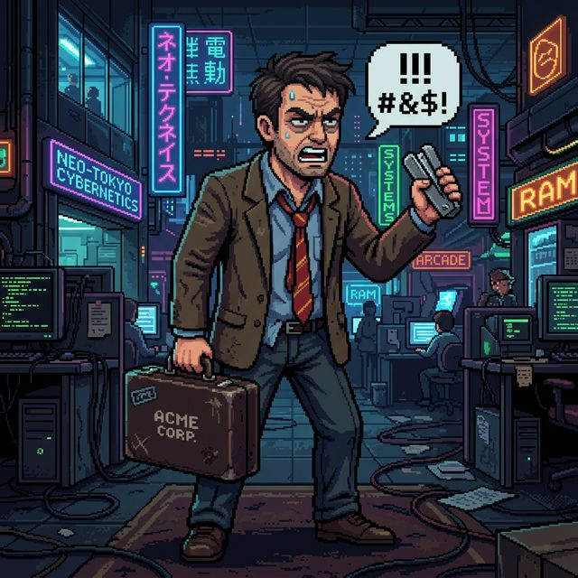
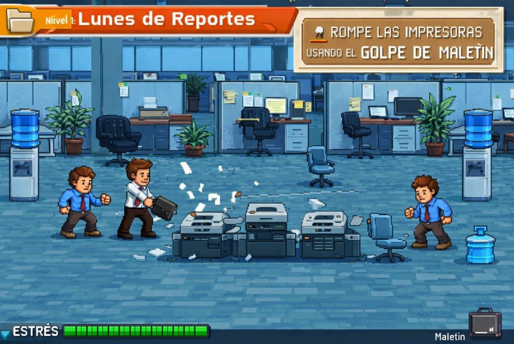
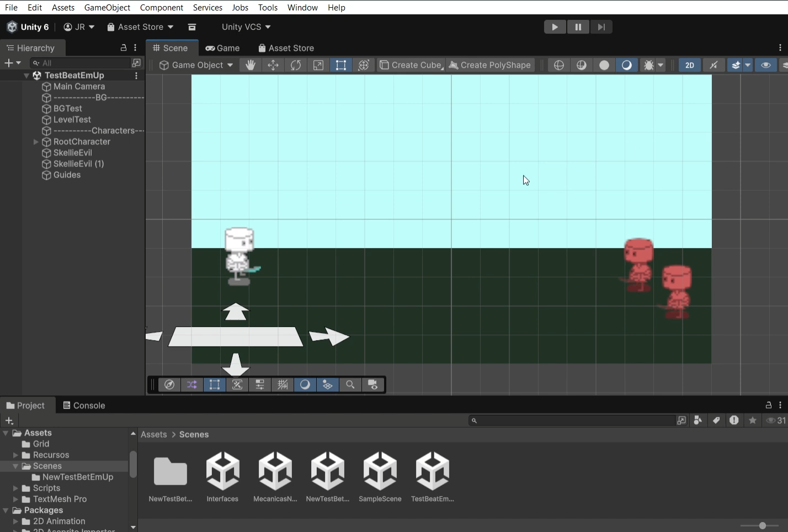
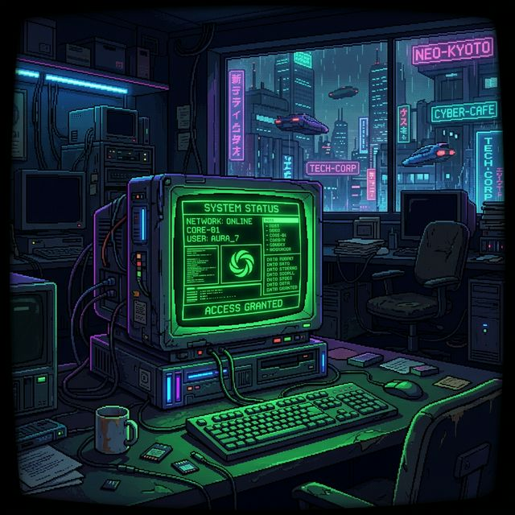
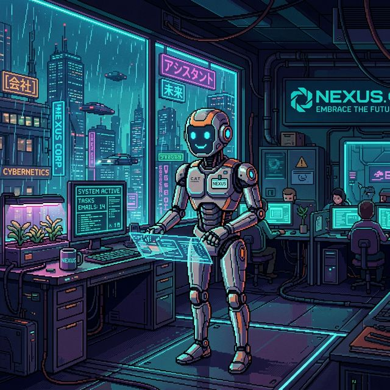
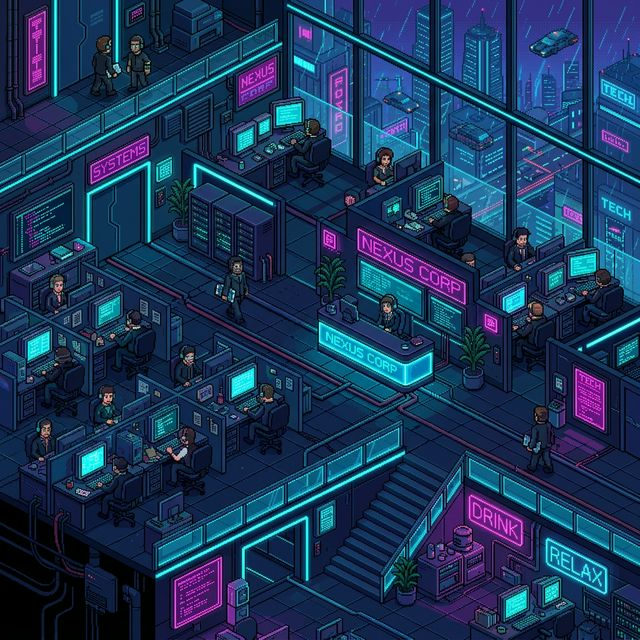

PROTOCOLO DE REBELIÓN: ACTIVO
Office Outrage es un videojuego beat ’em up de desplazamiento lateral en 2D con estética pixel art, en el que el jugador controla a John, un oficinista agotado que, tras recibir un correo urgente del CEO un viernes a las 5:00 PM, decide abrirse paso por 10 pisos de una megacorporación para enfrentarlo cara a cara.
A lo largo del recorrido utiliza suministros de oficina como armas, café como potenciador y su propia furia acumulada para sobrevivir a un entorno laboral absurdo, opresivo y satírico.

ESPECIFICACIONES TÉCNICAS: NIVEL 1
Inspiración: El caos burocrático y la sensación de iniciar una semana saturada. Basado en el "laberinto de cubículos".
Tema: Acción introductoria / Tutorial. Enfoque en enseñar las bases del combate y el ritmo del juego.
Ocurre tras recibir el correo del CEO. Representa el primer paso de la rebelión de John contra la cultura corporativa.
SEGUIMIENTO SEMANAL DE PROGRESO
En clase se seleccionó el GDD del compañero Juan Andrés Escobar Castillo como base del proyecto. El equipo analizó el concepto, el perfil del juego y referencias de interfaz para definir la dirección estética y mecánica.
Además, se realizó una investigación del género beat ’em up y se desarrolló un primer prototipo funcional con movimiento del personaje.


Implementación del sistema de gestión de ítems. Uso de grapadoras, teclados y monitores como herramientas de autodefensa corporativa.



[ CONTINUARÁ... ]